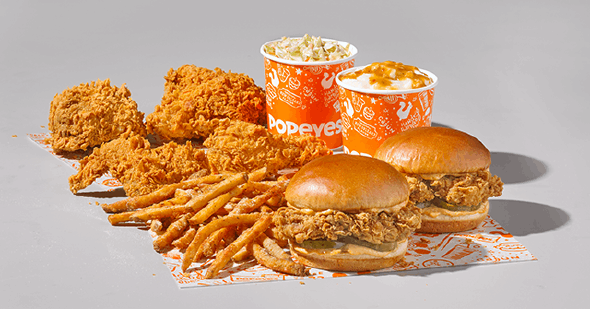

- Quick service
- Convenience
- Affordability
- Affordability
- Digestive issues
- Saturated fats

Comparison between the pros and cons of Popeye to find out if it is so good.
| Pros | Cons |
|---|---|
|
|
|
 |
 |
Martin Luther King JrMartin Luther King Jr. (1929 – 1968) was a Baptist minister, civil rights leader, and Nobel Peace Prize winner. He was a leader of the American civil rights movement in the 1950s and 1960s. Known for:
|
| 2 | |
 |
2 |